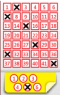

Aufgabe 1.9

Wie viele verschiedene Ziehungen sind bei diesem System möglich im Vergleich zum alten «6 aus 45»?
- Das neue System hat zwei unabhängige Komponenten: Hauptzahlen und Glückszahl
- Bei den Hauptzahlen: Reihenfolge egal, ohne Wiederholung
- Nutzen Sie das Multiplikationsprinzip für die Gesamtanzahl
- Vergleichen Sie die Größenordnungen der Ergebnisse
Aktuelles Swiss Lotto System (seit 2013)
Das aktuelle System besteht aus zwei Teilen:
- Hauptzahlen: 6 aus 42 Zahlen auswählen
- Glückszahl: 1 aus 6 Zahlen auswählen
Schritt 1: Anzahl Möglichkeiten für die Hauptzahlen
Bei den Hauptzahlen ist die Reihenfolge egal (die Zahlen werden sortiert gezogen) und jede Zahl kann nur einmal vorkommen. Das ist eine klassische Kombination:
$$\binom{42}{6} = \frac{42!}{6! \cdot 36!} = \frac{42 \cdot 41 \cdot 40 \cdot 39 \cdot 38 \cdot 37}{6 \cdot 5 \cdot 4 \cdot 3 \cdot 2 \cdot 1}= 5'245'786$$
Schritt 2: Anzahl Möglichkeiten für die Glückszahl
Die Glückszahl ist einfach: 6 Möglichkeiten (die Zahlen 1 bis 6).
Schritt 3: Gesamtanzahl nach dem Zählprinzip
Die Auswahl der Hauptzahlen und der Glückszahl sind unabhängig voneinander. Nach dem Multiplikationsprinzip:
$$|\Omega_{\text{neu}}| = \binom{42}{6} \cdot 6 = 5'245'786 \cdot 6 = 31'474'716$$
Altes Swiss Lotto System (bis 2013)
Beim alten System wurden nur 6 aus 45 Zahlen gezogen, ohne zusätzliche Glückszahl:
$$|\Omega_{\text{alt}}| = \binom{45}{6} = \frac{45!}{6! \cdot 39!} = \frac{45 \cdot 44 \cdot 43 \cdot 42 \cdot 41 \cdot 40}{720}= 8'145'060$$
Vergleich der Systeme
$$\frac{|\Omega_{\text{neu}}|}{|\Omega_{\text{alt}}|} = \frac{31'474'716}{8'145'060} \approx 3.86$$
Die Anzahl der möglichen Ziehungen hat sich fast vervierfacht!
Konsequenzen für die Spieler:
- Die Gewinnchance für den Hauptgewinn (6 Richtige + Glückszahl) ist deutlich kleiner geworden, Von etwa 1:8 Millionen auf etwa 1:31 Millionen
- Dafür können höhere Jackpots entstehen (mehr Ziehungen ohne Hauptgewinner) – Das war auch die Absicht der Umstellung: Höhere Jackpots generieren mehr Aufmerksamkeit
Zusatzüberlegung: Interessant ist, dass trotz weniger Zahlen im Pool (42 statt 45) die Gewinnwahrscheinlichkeit durch die zusätzliche Glückszahl stark gesunken ist. Die Glückszahl multipliziert die Anzahl der Möglichkeiten mit Faktor 6,
während die Reduktion von 45 auf 42 Zahlen die Möglichkeiten nur um gut ein Drittel verringert (Faktor $\approx 1.55$).